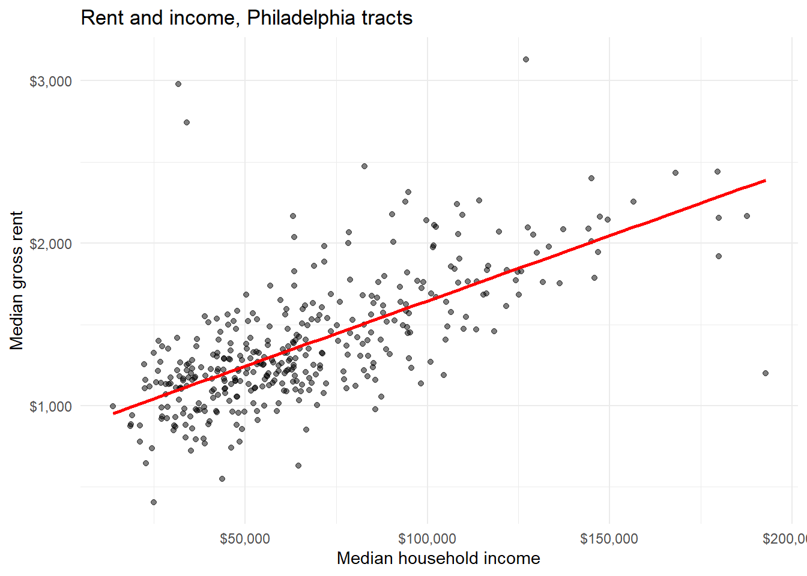
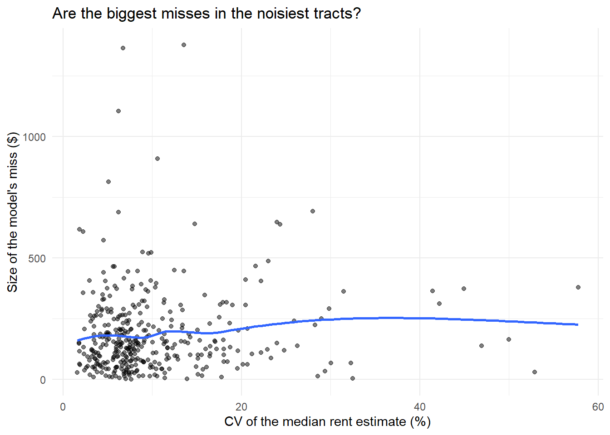
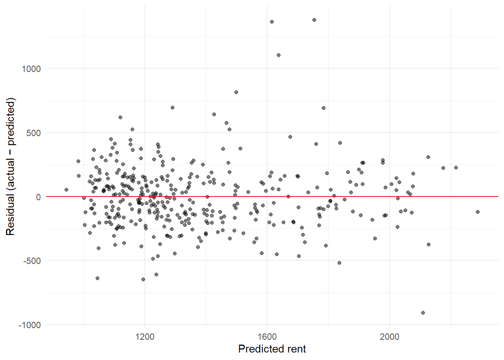
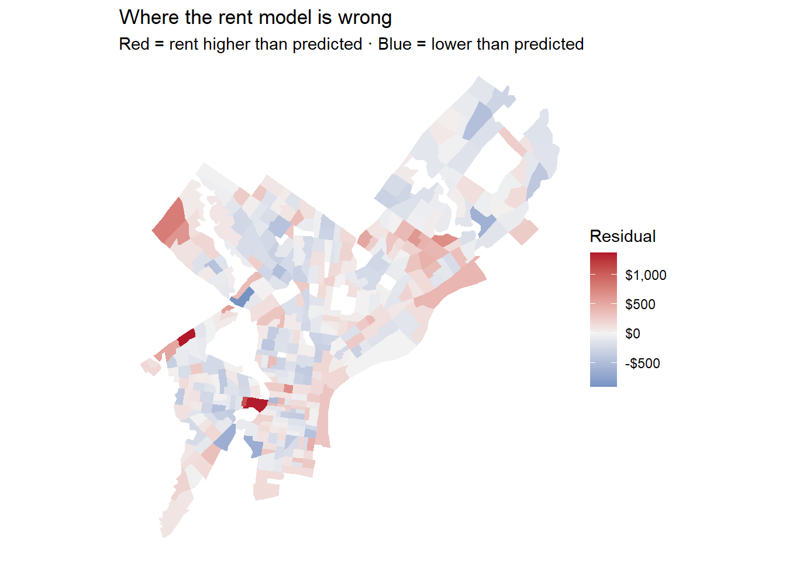

library(tidyverse)
library(tidycensus)
library(sf)
library(caret) # cross-validation
library(lmtest) # Breusch-Pagan test
# Your key lives in .Renviron. Never paste it here.
Sys.getenv("CENSUS_API_KEY") != "" # should print TRUE[1] TRUEMUSA 5080 · Linear Regression for Prediction
The first part of the lab (Parts 0–7) is guided and builds your toolkit. Type the code yourself; don’t copy and paste. Fill in every ___. The last part is the challenge: your team builds the best rent prediction model it can and defends it. At the end, the presenter from each team is chosen at random, so everyone needs to understand every step.
The question: A housing agency wants an expected rent for every Philadelphia tract, so it can flag tracts where rents run well above what we’d expect given who lives there.
Is that a β̂ problem or a ŷ problem? Write your answer here before you start_
[1] TRUEThis is last week’s pull with a few more variables. Every line should look familiar.
philly_tracts <- get_acs(
geography = "tract",
state = "PA",
county = "Philadelphia",
variables = c(
med_rent = "B25064_001", # median gross rent (our Y)
med_inc = "B19013_001", # median household income
total_pop = "B01003_001",
occ_units = "B25003_001", # occupied housing units
renter_occ = "B25003_003", # renter-occupied units
edu_total = "B15003_001", # population 25+
ba = "B15003_022",
ma = "B15003_023",
prof = "B15003_024",
phd = "B15003_025"
),
year = 2023,
output = "wide",
geometry = TRUE
)
|
| | 0%
|
|= | 1%
|
|== | 2%
|
|== | 3%
|
|=== | 4%
|
|=== | 5%
|
|==== | 5%
|
|==== | 6%
|
|===== | 7%
|
|===== | 8%
|
|======= | 10%
|
|======== | 11%
|
|======== | 12%
|
|========= | 13%
|
|========== | 14%
|
|=========== | 15%
|
|=========== | 16%
|
|============ | 17%
|
|============ | 18%
|
|============= | 19%
|
|============== | 20%
|
|============== | 21%
|
|=============== | 22%
|
|================ | 23%
|
|================ | 24%
|
|================= | 25%
|
|================== | 25%
|
|=================== | 26%
|
|=================== | 27%
|
|==================== | 28%
|
|===================== | 29%
|
|===================== | 30%
|
|====================== | 31%
|
|======================= | 32%
|
|======================= | 33%
|
|======================== | 34%
|
|========================= | 35%
|
|========================= | 36%
|
|========================== | 37%
|
|=========================== | 38%
|
|=========================== | 39%
|
|============================ | 40%
|
|============================= | 41%
|
|============================== | 42%
|
|============================== | 43%
|
|=============================== | 44%
|
|================================ | 45%
|
|================================ | 46%
|
|================================= | 47%
|
|================================== | 48%
|
|================================== | 49%
|
|=================================== | 50%
|
|==================================== | 51%
|
|==================================== | 52%
|
|===================================== | 53%
|
|====================================== | 54%
|
|====================================== | 55%
|
|======================================= | 56%
|
|======================================== | 57%
|
|======================================== | 58%
|
|========================================= | 59%
|
|========================================== | 60%
|
|=========================================== | 61%
|
|=========================================== | 62%
|
|============================================ | 63%
|
|============================================= | 64%
|
|============================================== | 65%
|
|============================================== | 66%
|
|=============================================== | 67%
|
|================================================ | 68%
|
|================================================ | 69%
|
|================================================= | 70%
|
|================================================== | 71%
|
|================================================== | 72%
|
|=================================================== | 73%
|
|==================================================== | 74%
|
|==================================================== | 75%
|
|===================================================== | 76%
|
|====================================================== | 77%
|
|====================================================== | 78%
|
|======================================================= | 79%
|
|======================================================== | 80%
|
|========================================================= | 81%
|
|========================================================== | 83%
|
|=========================================================== | 84%
|
|=========================================================== | 85%
|
|============================================================ | 86%
|
|============================================================= | 87%
|
|============================================================== | 88%
|
|=============================================================== | 89%
|
|=============================================================== | 90%
|
|================================================================ | 91%
|
|================================================================= | 92%
|
|================================================================= | 93%
|
|================================================================== | 94%
|
|=================================================================== | 96%
|
|==================================================================== | 97%
|
|==================================================================== | 98%
|
|===================================================================== | 99%
|
|======================================================================| 100%#Now build the variables. A data frame goes in, a data frame comes out.
Bring back the stations and count how many sit within half a mile of each tract. This is Week 4 with one new function.
Stop and look: st_is_within_distance() returns a list, one element per tract, holding the stations within range. What does lengths() do to that list?
A regression can’t use a row with a missing Y or X. R will quietly drop those rows, and later your residuals won’t line up with your tracts. So drop them yourself, on purpose, and count.
[1] 408[1] 377Here I has 407 tracts and after the requirements met of a population greater than 0, median rent data, median income data, a backelors +education data, and renter percentage data, there are only 377 tracts that meet these requirments.
Rule from Week 4, again: how many tracts did you lose? Which kind of tract has no median rent? (Hint: think about who lives there.)
The Week 3 habit comes first: plot the relationship before you fit anything.
ggplot(tracts, aes(x = med_incE, y = med_rentE)) +
geom_point(alpha = 0.5) +
geom_smooth(method = "lm", se = FALSE, color = "red") +
scale_x_continuous(labels = scales::dollar) +
scale_y_continuous(labels = scales::dollar) +
labs(x = "Median household income", y = "Median gross rent",
title = "Rent and income, Philadelphia tracts") +
theme_minimal()
Stop and look: Does a straight line describe this cloud well everywhere, or does it bend? Where are the points that sit far from the line?
The straight line does describe the points quite well. While it is a line of best fit, it does now show the tendency of the data to lie around the lower median household income and lower median gross rent.
Call:
lm(formula = med_rentE ~ med_incE, data = tracts)
Residuals:
Min 1Q Median 3Q Max
-1189.35 -163.92 -17.77 133.39 1881.94
Coefficients:
Estimate Std. Error t value Pr(>|t|)
(Intercept) 8.433e+02 3.347e+01 25.19 <2e-16 ***
med_incE 8.022e-03 4.491e-04 17.86 <2e-16 ***
---
Signif. codes: 0 '***' 0.001 '**' 0.01 '*' 0.05 '.' 0.1 ' ' 1
Residual standard error: 287.8 on 375 degrees of freedom
Multiple R-squared: 0.4597, Adjusted R-squared: 0.4583
F-statistic: 319.1 on 1 and 375 DF, p-value: < 2.2e-16Units first. Translate the income coefficient into something a person would notice:
Write one sentence: “A tract with $10,000 more in median income has a predicted rent about $80 higher per month.”
Stop and look: The p-value is tiny. Does that tell you whether $80/month is a big effect? What would you need to know to decide?
median(philly_tracts$med_rentE, na.rm = TRUE)
Add the other predictors.
Call:
lm(formula = med_rentE ~ med_incE + pct_renter + pct_ba + n_stations,
data = tracts)
Residuals:
Min 1Q Median 3Q Max
-909.49 -151.61 -13.45 130.91 1377.50
Coefficients:
Estimate Std. Error t value Pr(>|t|)
(Intercept) 892.173550 62.415040 14.294 < 2e-16 ***
med_incE 0.003736 0.000798 4.682 3.99e-06 ***
pct_renter -0.632275 0.922470 -0.685 0.493509
pct_ba 5.926778 1.107564 5.351 1.53e-07 ***
n_stations 5.477881 1.562155 3.507 0.000509 ***
---
Signif. codes: 0 '***' 0.001 '**' 0.01 '*' 0.05 '.' 0.1 ' ' 1
Residual standard error: 256.4 on 372 degrees of freedom
Multiple R-squared: 0.5746, Adjusted R-squared: 0.57
F-statistic: 125.6 on 4 and 372 DF, p-value: < 2.2e-16Look at the n_stations coefficient. Answer both questions in one or two sentences each:
β̂ reading: Can you tell the housing agency that bike share stations raise rents? Why or why not?
Your answer: No, we can’t conclude that from the model. It tracks that areas with more bike shares tend to have higher rents but it can;t be confirmed.
ŷ reading: Should n_stations stay in a model whose only job is predicting rent? Why or why not?
Your answer: Yes it should stay in the model because even if it can’t be proven it deos make the model more accurate in predicting correlations in rent.
If your answers to 1 and 2 differ, that’s the point. For inference, a variable that stands in for something unmeasured is a problem. For prediction, it can be exactly why the model works.
One more check. Compare in-sample fit:
Hold on to these numbers. Part 6 asks whether they mean what they seem to.
Our Y is an ACS estimate with its own margin of error. Add the residuals to the table and check whether the biggest misses happen where the estimate is least reliable.
tracts <- tracts %>%
mutate(fitted_m2 = fitted(m2),
resid_m2 = residuals(m2))
ggplot(tracts, aes(x = rent_cv, y = abs(resid_m2))) +
geom_point(alpha = 0.5) +
geom_smooth(se = FALSE) +
labs(x = "CV of the median rent estimate (%)",
y = "Size of the model's miss ($)",
title = "Are the biggest misses in the noisiest tracts?") +
theme_minimal()
Stop and look: If a tract’s rent estimate has a CV of 35%, how much of the model’s miss there could be survey noise rather than a model failure? What does that mean for flagging “tracts with rents above expectation”?
A CV of 35% means the rent estimate has substantial survey uncertianty. Some of the models missess could be due to noise in the ACS estimate rather than model faliure.
Week 3 CV = coefficient of variation: how noisy is one estimate? Today’s CV = cross-validation: how well does a model predict data it hasn’t seen? Same letters, unrelated ideas.
set.seed(5080)
n <- nrow(tracts)
train_idx <- sample(1:n, size = 0.8 * n)
train_data <- tracts[train_idx, ]
test_data <- tracts[-train_idx, ]
m2_train <- lm(med_rentE ~ med_incE + pct_renter + pct_ba + n_stations,
data = train_data)
test_pred <- predict(m2_train, newdata = test_data)
rmse_train <- sqrt(mean(residuals(m2_train)^2))
rmse_test <- sqrt(mean((test_data$med_rentE - test_pred)^2))
c(train = rmse_train, test = rmse_test) train test
252.7328 265.6962 Stop and look: Which RMSE is larger? Why would you expect that? In words: “The model’s typical miss on tracts it hasn’t seen is about $265.7/ month.” This is expected as the test tracts were not used to fit the model.
Change the seed to any other number and rerun the chunk. Did the test RMSE change? That’s why one split isn’t enough.
caret wants a plain data frame, so drop the geometry first. (The geometry isn’t a predictor, and train() will choke on it.)
model_df <- tracts %>% st_drop_geometry()
ctrl <- trainControl(method = "cv", number = 10)
set.seed(5080)
cv_m1 <- train(med_rentE ~ med_incE,
data = model_df, method = "lm", trControl = ctrl)
set.seed(5080)
cv_m2 <- train(med_rentE ~ med_incE + pct_renter + pct_ba + n_stations,
data = model_df, method = "lm", trControl = ctrl)
cv_m1$results intercept RMSE Rsquared MAE RMSESD RsquaredSD MAESD
1 TRUE 278.0408 0.5024553 200.9811 77.06661 0.1206571 33.81435 intercept RMSE Rsquared MAE RMSESD RsquaredSD MAESD
1 TRUE 253.0011 0.5928214 189.4279 60.70001 0.0953266 34.92001Setting the same seed before each train() gives both models the same folds, so the comparison is fair.
Stop and look: Fill in the table.
|—|—|—| | m1 | | |278.04 | m2 | | |253
Did adding variables improve R²? Did it improve CV RMSE by as much? For a prediction task, which column is the grade?
Yes it did, assing the variable improved r squared. CV RMSE is the most importiant measure since it tells us how large the models prediction errors are on unseen data.

studentized Breusch-Pagan test
data: m2
BP = 13.807, df = 4, p-value = 0.007938Stop and look: Random cloud, funnel, or curve? If it’s a funnel, the predictions aren’t biased, but one RMSE hides the fact that the model misses by much more in some tracts. Which tracts?
As the predicted rent becomes higher residuals get fruther apart. It misses much more in the higher rent tracts since at this point the residuals get much more spread out from the line of best fit.
The residuals are already a column in an sf data frame. Mapping them is one geom_sf() away.
ggplot(tracts) +
geom_sf(aes(fill = resid_m2), color = NA) +
scale_fill_gradient2(low = "#2166ac", mid = "grey95", high = "#b2182b",
midpoint = 0, labels = scales::dollar) +
theme_void() +
labs(title = "Where the rent model is wrong",
subtitle = "Red = rent higher than predicted · Blue = lower than predicted",
fill = "Residual")
Stop and look: If the errors were random, the map would look speckled. Does it? Where do the reds sit together? What might those places have in common that the model doesn’t know about?
The map does look semi-speckeled, it could be more random though. There are some areas in north philly containing more areas of reds and reds which tend to be the poorer parts of Philly like Kensington and North philly.
Write down your answer. We’ll come back to it in Weeks 6 and 7.
Your team’s job: build the best model for predicting tract median rent, then use it to answer the agency’s question.
model_df (or tracts) and run set.seed(5080) directly before train(), exactly as in Part 6B, so every team is tested on the same folds.load_variables(2023, "acs5") to browse) and any spatial feature you can build with Week 4 tools: distances, buffers, counts.med_rentM, rent_cv, rent burden (B25071), and the rent distribution tables (B25063). Ask yourself: would the agency have this variable for a tract whose rent it’s trying to predict? If not, using it is cheating the test. That’s called leakage.| Points | |
|---|---|
| Lowest CV RMSE in the room | 3 |
| Second and third lowest | 2 / 1 |
| Feature explanation is clear and specific | 2 |
| Coefficient read correctly both ways | 2 |
| Agency list accounts for reliability (Week 3) | 2 |
| Randomly chosen presenter explains the model clearly | 3 |
| Breaks a rule (leakage or dropped rows) | −5 |
med_incE with log(med_incE). Does the curve in Part 2 straighten? Does CV RMSE improve? How do you read the new coefficient?method = "lm" to method = "ranger" (run install.packages("ranger") first). Does it beat your linear model? By how much? Is the gain worth losing the ability to explain the model to the agency?---
title: "Week 5 In-Class Lab: Where the Model Is Wrong"
subtitle: "MUSA 5080 · Linear Regression for Prediction"
format:
html:
toc: true
code-tools: true
execute:
warning: false
message: false
freeze: false
---
The first part of the lab (Parts 0–7) is guided and builds your toolkit. **Type the code yourself**; don't copy and paste. Fill in every `___`. The last part is the **challenge**: your team builds the best rent prediction model it can and defends it. At the end, the presenter from each team is chosen at random, so everyone needs to understand every step.
> **The question:** A housing agency wants an *expected* rent for every Philadelphia tract, so it can flag tracts where rents run well above what we'd expect given who lives there.
>
> Is that a β̂ problem or a ŷ problem? Write your answer here before you start_
---
## Part 0: Setup
```{r}
#| label: setup
library(tidyverse)
library(tidycensus)
library(sf)
library(caret) # cross-validation
library(lmtest) # Breusch-Pagan test
# Your key lives in .Renviron. Never paste it here.
Sys.getenv("CENSUS_API_KEY") != "" # should print TRUE
```
---
## Part 1: Rebuild the table you already know
This is last week's pull with a few more variables. Every line should look familiar.
```{r}
#| label: pull-tracts
philly_tracts <- get_acs(
geography = "tract",
state = "PA",
county = "Philadelphia",
variables = c(
med_rent = "B25064_001", # median gross rent (our Y)
med_inc = "B19013_001", # median household income
total_pop = "B01003_001",
occ_units = "B25003_001", # occupied housing units
renter_occ = "B25003_003", # renter-occupied units
edu_total = "B15003_001", # population 25+
ba = "B15003_022",
ma = "B15003_023",
prof = "B15003_024",
phd = "B15003_025"
),
year = 2023,
output = "wide",
geometry = TRUE
)
philly_tracts <- st_transform(philly_tracts, 2272)
```
#Now build the variables. **A data frame goes in, a data frame comes out.**
```{r}
#| label: build-vars
philly_tracts <- philly_tracts %>%
mutate(
pct_renter = renter_occE / occ_unitsE * 100,
pct_ba = (baE + maE + profE + phdE) / edu_totalE * 100,
rent_se = med_rentM / 1.645,
rent_cv = rent_se / med_rentE * 100
)
```
Bring back the stations and count how many sit within half a mile of each tract. This is Week 4 with one new function.
```{r}
#| label: stations
stations <- st_read("https://www.rideindego.com/stations/json/", quiet = TRUE) %>%
st_transform(st_crs(philly_tracts))
philly_tracts <- philly_tracts %>%
mutate(n_stations = lengths(st_is_within_distance(., stations, dist = 2640)))
```
**Stop and look:** `st_is_within_distance()` returns a list, one element per tract, holding the stations within range. What does `lengths()` do to that list?
### Which tracts can we model?
A regression can't use a row with a missing Y or X. R will quietly drop those rows, and later your residuals won't line up with your tracts. So drop them **yourself**, on purpose, and count.
```{r}
#| label: filter
nrow(philly_tracts)
tracts <- philly_tracts %>%
filter(total_popE > 0,
!is.na(med_rentE),
!is.na(med_incE),
!is.na(pct_ba),
!is.na(pct_renter))
nrow(tracts)
```
Here I has 407 tracts and after the requirements met of a population greater than 0, median rent data, median income data, a backelors +education data, and renter percentage data, there are only 377 tracts that meet these requirments.
**Rule from Week 4, again:** how many tracts did you lose? Which kind of tract has no median rent? (Hint: think about who lives there.)
---
## Part 2: Look before you model
The Week 3 habit comes first: plot the relationship before you fit anything.
```{r}
#| label: scatter
ggplot(tracts, aes(x = med_incE, y = med_rentE)) +
geom_point(alpha = 0.5) +
geom_smooth(method = "lm", se = FALSE, color = "red") +
scale_x_continuous(labels = scales::dollar) +
scale_y_continuous(labels = scales::dollar) +
labs(x = "Median household income", y = "Median gross rent",
title = "Rent and income, Philadelphia tracts") +
theme_minimal()
```
**Stop and look:** Does a straight line describe this cloud well everywhere, or does it bend? Where are the points that sit far from the line?
The straight line does describe the points quite well. While it is a line of best fit, it does now show the tendency of the data to lie around the lower median household income and lower median gross rent.
---
## Part 3: Fit the line
```{r}
#| label: m1
m1 <- lm(med_rentE ~ med_incE, data = tracts)
summary(m1)
```
**Units first.** Translate the income coefficient into something a person would notice:
```{r}
#| label: translate
coef(m1)["med_incE"] * 10000 # predicted rent change for +$10,000 of income
```
Write one sentence: "A tract with $10,000 more in median income has a predicted rent about $80 higher per month."
**Stop and look:** The p-value is tiny. Does that tell you whether $80/month is a big effect? What would you need to know to decide?
median(philly_tracts$med_rentE, na.rm = TRUE)
Here I calculated the average median of rent price people pay to see okay how dramatic is a $80/month change. That's 6.2% of the median tract which gives you context. However, the p-value tells us the relationship is statistically signifigant but it does not tell us wheter an $80/month effect is large.
---
## Part 4: Read the same output twice
Add the other predictors.
```{r}
#| label: m2
m2 <- lm(med_rentE ~ med_incE + pct_renter + pct_ba + n_stations, data = tracts)
summary(m2)
```
Look at the `n_stations` coefficient. Answer both questions in one or two sentences each:
1. **β̂ reading:** Can you tell the housing agency that bike share stations raise rents? Why or why not?
*Your answer:* No, we can't conclude that from the model. It tracks that areas with more bike shares tend to have higher rents but it can;t be confirmed.
2. **ŷ reading:** Should `n_stations` stay in a model whose only job is predicting rent? Why or why not?
*Your answer:* Yes it should stay in the model because even if it can't be proven it deos make the model more accurate in predicting correlations in rent.
::: {.callout-note}
## Same number, two questions
If your answers to 1 and 2 differ, that's the point. For inference, a variable that stands in for something unmeasured is a problem. For prediction, it can be exactly why the model works.
:::
One more check. Compare in-sample fit:
```{r}
#| label: r2
summary(m1)$r.squared
summary(m2)$r.squared
```
Hold on to these numbers. Part 6 asks whether they mean what they seem to.
---
## Part 5: Uncertainty in input data
Our Y is an ACS estimate with its own margin of error. Add the residuals to the table and check whether the biggest misses happen where the estimate is least reliable.
```{r}
#| label: fog
tracts <- tracts %>%
mutate(fitted_m2 = fitted(m2),
resid_m2 = residuals(m2))
ggplot(tracts, aes(x = rent_cv, y = abs(resid_m2))) +
geom_point(alpha = 0.5) +
geom_smooth(se = FALSE) +
labs(x = "CV of the median rent estimate (%)",
y = "Size of the model's miss ($)",
title = "Are the biggest misses in the noisiest tracts?") +
theme_minimal()
```
**Stop and look:** If a tract's rent estimate has a CV of 35%, how much of the model's miss there could be survey noise rather than a model failure? What does that mean for flagging "tracts with rents above expectation"?
A CV of 35% means the rent estimate has substantial survey uncertianty. Some of the models missess could be due to noise in the ACS estimate rather than model faliure.
---
## Part 6: Fit vs. prediction
::: {.callout-warning}
## Two different CVs
**Week 3 CV** = coefficient of variation: how noisy is *one estimate*?
**Today's CV** = cross-validation: how well does a *model* predict data it hasn't seen?
Same letters, unrelated ideas.
:::
### 6A: One train/test split
```{r}
#| label: split
set.seed(5080)
n <- nrow(tracts)
train_idx <- sample(1:n, size = 0.8 * n)
train_data <- tracts[train_idx, ]
test_data <- tracts[-train_idx, ]
m2_train <- lm(med_rentE ~ med_incE + pct_renter + pct_ba + n_stations,
data = train_data)
test_pred <- predict(m2_train, newdata = test_data)
rmse_train <- sqrt(mean(residuals(m2_train)^2))
rmse_test <- sqrt(mean((test_data$med_rentE - test_pred)^2))
c(train = rmse_train, test = rmse_test)
```
**Stop and look:** Which RMSE is larger? Why would you expect that? In words: "The model's typical miss on tracts it hasn't seen is about $265.7/ month." This is expected as the test tracts were not used to fit the model.
Change the seed to any other number and rerun the chunk. Did the test RMSE change? That's why one split isn't enough.
### 6B: 10-fold cross-validation
`caret` wants a plain data frame, so drop the geometry first. (The geometry isn't a predictor, and `train()` will choke on it.)
```{r}
#| label: cv
model_df <- tracts %>% st_drop_geometry()
ctrl <- trainControl(method = "cv", number = 10)
set.seed(5080)
cv_m1 <- train(med_rentE ~ med_incE,
data = model_df, method = "lm", trControl = ctrl)
set.seed(5080)
cv_m2 <- train(med_rentE ~ med_incE + pct_renter + pct_ba + n_stations,
data = model_df, method = "lm", trControl = ctrl)
cv_m1$results
cv_m2$results
```
Setting the same seed before each `train()` gives both models the same folds, so the comparison is fair.
**Stop and look:** Fill in the table.
| | In-sample R²
| CV RMSE |
|---|---|---|
| m1 | | |278.04
| m2 | | |253
Did adding variables improve R²? Did it improve CV RMSE by as much? For a prediction task, which column is the grade?
Yes it did, assing the variable improved r squared. CV RMSE is the most importiant measure since it tells us how large the models prediction errors are on unseen data.
---
## Part 7: Where is the model wrong?
### 7A: Residuals vs. fitted
```{r}
#| label: resid-fitted
ggplot(tracts, aes(x = fitted_m2, y = resid_m2)) +
geom_point(alpha = 0.5) +
geom_hline(yintercept = 0, color = "red") +
labs(x = "Predicted rent", y = "Residual (actual − predicted)") +
theme_minimal()
bptest(m2)
```
**Stop and look:** Random cloud, funnel, or curve? If it's a funnel, the predictions aren't biased, but one RMSE hides the fact that the model misses by much more in some tracts. Which tracts?
As the predicted rent becomes higher residuals get fruther apart. It misses much more in the higher rent tracts since at this point the residuals get much more spread out from the line of best fit.
### 7B: The map
The residuals are already a column in an sf data frame. Mapping them is one `geom_sf()` away.
```{r}
#| label: resid-map
ggplot(tracts) +
geom_sf(aes(fill = resid_m2), color = NA) +
scale_fill_gradient2(low = "#2166ac", mid = "grey95", high = "#b2182b",
midpoint = 0, labels = scales::dollar) +
theme_void() +
labs(title = "Where the rent model is wrong",
subtitle = "Red = rent higher than predicted · Blue = lower than predicted",
fill = "Residual")
```
**Stop and look:** If the errors were random, the map would look speckled. Does it? Where do the reds sit together? What might those places have in common that the model doesn't know about?
The map does look semi-speckeled, it could be more random though. There are some areas in north philly containing more areas of reds and reds which tend to be the poorer parts of Philly like Kensington and North philly.
Write down your answer. We'll come back to it in Weeks 6 and 7.
---
## Part 8: The Challenge
Your team's job: build the **best model for predicting tract median rent**, then use it to answer the agency's question.
### Rules
1. **The grade is 10-fold CV RMSE.** Use `model_df` (or `tracts`) and run `set.seed(5080)` directly before `train()`, exactly as in Part 6B, so every team is tested on the same folds.
2. **Don't drop rows.** If you add a variable with missing values, you change the folds and the comparison stops being fair. Fill the gaps or choose a different variable.
3. **You may add** any ACS variables (use `load_variables(2023, "acs5")` to browse) and any spatial feature you can build with Week 4 tools: distances, buffers, counts.
4. **You may not use anything built from rent itself.** That rules out `med_rentM`, `rent_cv`, rent burden (`B25071`), and the rent distribution tables (`B25063`). Ask yourself: would the agency *have* this variable for a tract whose rent it's trying to predict? If not, using it is cheating the test. That's called **leakage**.
### Deliver
1. **Your CV RMSE**, in dollars, written as a sentence.
2. **One feature you added, and why.** What did you think it would capture that the census variables miss? Did it help?
3. **One coefficient, read twice.** Pick a variable in your final model and give its β̂ reading and its ŷ reading in one sentence each.
4. **The agency's list.** Using your final model fit to all tracts, find the five tracts with the largest *positive* residuals (rent well above expectation). For each, report the residual and the rent CV. Which of the five would you tell the agency to trust, and which might be fog?
5. **Your residual map.** Did your added features make the clusters from Part 7B shrink?
```{r}
#| label: challenge
# Your team's code here
```
### Scoring (for bragging rights, not grades)
| | Points |
|---|---|
| Lowest CV RMSE in the room | 3 |
| Second and third lowest | 2 / 1 |
| Feature explanation is clear and specific | 2 |
| Coefficient read correctly both ways | 2 |
| Agency list accounts for reliability (Week 3) | 2 |
| Randomly chosen presenter explains the model clearly | 3 |
| Breaks a rule (leakage or dropped rows) | −5 |
### Before you present, discuss
- One of your variables is not statistically significant, but removing it makes CV RMSE worse. Do you keep it? What would your Spatial Statistics instructor say, and why is neither of you wrong?
- A council member sees your model and says, "So your model proves that renters drive up rents." What do you say?
- If the agency uses your top-five list to target inspections, whose rents does a model error hurt most?
---
## If you're curious (ungraded, no extra points)
- Replace `med_incE` with `log(med_incE)`. Does the curve in Part 2 straighten? Does CV RMSE improve? How do you read the new coefficient?
- Try a random forest: change `method = "lm"` to `method = "ranger"` (run `install.packages("ranger")` first). Does it beat your linear model? By how much? Is the gain worth losing the ability to explain the model to the agency?
- Your residual map probably still has clusters. Build one spatial feature that you think would absorb them, add it, and remap. That's next week in miniature.